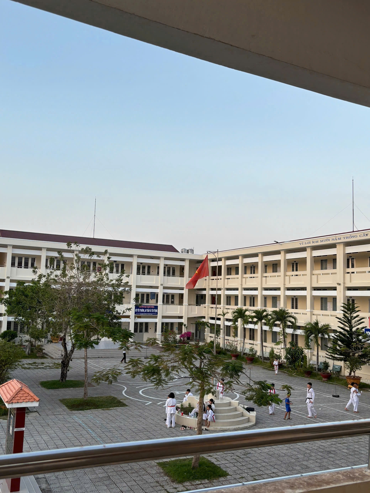
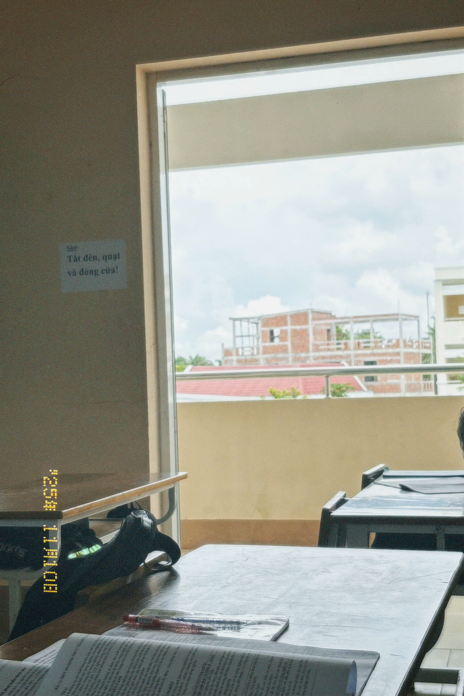
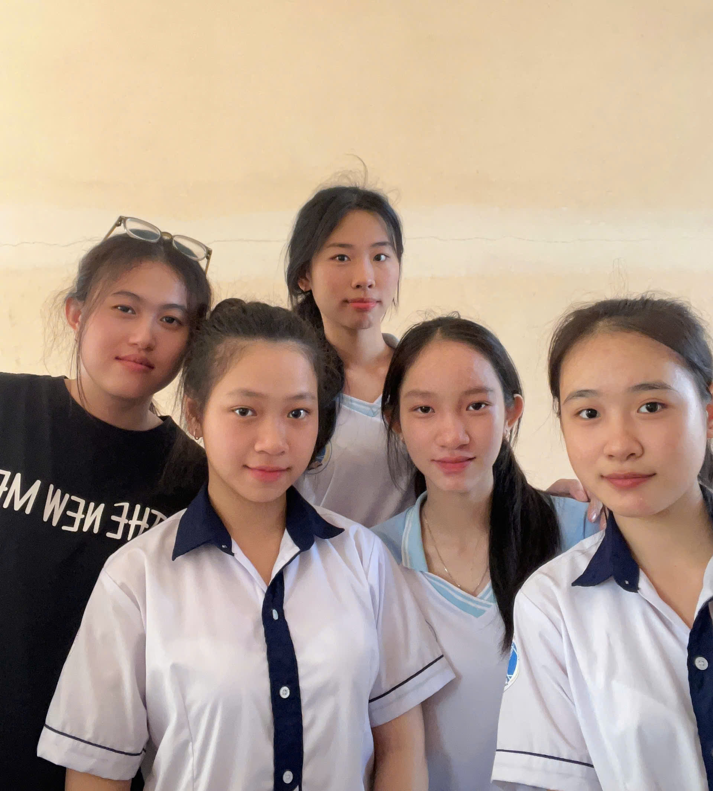

🌱Ý nghĩa hoạt động
1. Cảm xúc hoạt động Hoạt động ngoại khóa trồng cây và làm sạch khuôn viên trường đã mang đến cho chúng em nhiều trải nghiệm ý nghĩa. Mỗi chúng em đều tích cực tham gia quét dọn sân trường, nhặt rác và trồng cây xanh. Không khí lao động vui tươi, đoàn kết giúp chúng em thêm yêu mái trường và nâng cao ý thức bảo vệ môi trường.
2. Gieo mầm xanh Mỗi cây xanh được trồng hôm nay là một mầm xanh cho tương lai. Chúng em mong muốn ngôi trường luôn xanh – sạch – đẹp, là nơi học tập trong lành và thân thiện. Từ những hành động nhỏ, chúng em hiểu rằng bảo vệ môi trường là trách nhiệm của mỗi học sinh.
🌱Hình ảnh



🌱Video
🌱Audio
🌱 Góc đóng góp ý kiến